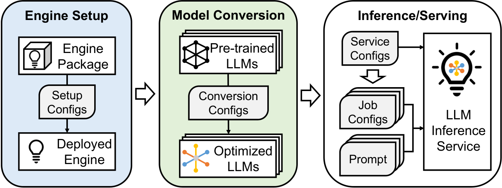

Research Background
Why fault localization matters in complex LLM inference engines.
Why fault localization matters in complex LLM inference engines.
Can execution-free methods identify the repair file?
Why do LLM agents miss the correct fault location?
Can domain knowledge improve localization through ClueFL?
What the thesis contributes, and where the evidence remains limited.

Install or compile the inference engine and verify hardware compatibility.
Convert, optimize, and package the model for the selected engine and environment.
Load the model, process requests, and generate responses.
These methods require evaluation on this task.
Inference-engine issues, a pre-fix repository, and no new execution evidence.
This thesis evaluates the setting, analyzes failure cases, and measures domain guidance.
Can existing methods localize fault locations without execution?
IR + LLM agentsWhere and why does agent exploration break down?
Trajectory analysisCan domain-specific knowledge improve the ranking?
ClueFLStrength Deterministic retrieval
Challenge Failure–fault location vocabulary mismatch
GPT-5.2 / DeepSeek V4 Pro configurations
Strength Semantic, multi-step exploration
Challenge Computation and exploration failures
SWE-agent · DeepSeek V4 Pro
129 of 145 fault locations
IR retrieves roughly half
of fault locations within Top-5.
Agents improve early ranking.
Top-k: fault location appears in the first k predictions. MRR@5: mean reciprocal rank, scored zero beyond rank 5. ↓: gap from the column best.
GPT-5.2 agent’s Top-5 gap:
82.14% source → 51.52% non-source
Windows startup on a GPU-less machine
GPU-discovery logs keep both agents in GPU-related paths.
discover/cpu_windows.go A neighboring CPU startup path stays outside the context.
Streaming response loses its final token
GPT-5.2 stops at Go-side scanning; DeepSeek inspects the native producer.
llm/ext_server/server.cpp The relevant chain crosses a language and process boundary.
API documentation requires a fault location
GPT-5.2 encounters a documentation link but continues reading code.
docs/api.mdSeeing a reference is not the same as inspecting its evidence.
Retain layers with a non-zero
suspiciousness score.
Inspect non-source artifacts;deps · pkg_summary · func
Relevance score + justification;
return all non-zero candidates.
51.03% → 58.62% 74 → 85 cases
64.83% → 67.59% 94 → 98 cases
Within each pair: same backbone, issues, pre-fix snapshots, and scorer. Guidance + exploration workflow change together. One run per instance.
−4.14 pp without layer knowledge · GPT-5.2
−2.07 pp without layer knowledge · DeepSeek
First systematic evaluation
Execution-free fault localization for LLM inference-engine bugs.
Repository-derived dataset
145 validated Ollama issue–fix pairs with pre-fix snapshots.
Domain-specific ClueFL framework
External knowledge and workflow improve fault-location ranking.
GPT-5.2: 15 newly solved; 4 baseline-only.
DeepSeek: 10 newly solved; 6 baseline-only.
Only fixes ancestral to each target pre-fix snapshot; exclude the target fix and later changes.
Estimate the full ClueFL configuration change within each backbone. Individual components are probed by ablation.
112 source-code cases
33 non-source cases
−3.03 pp DeepSeek non-source Top-1